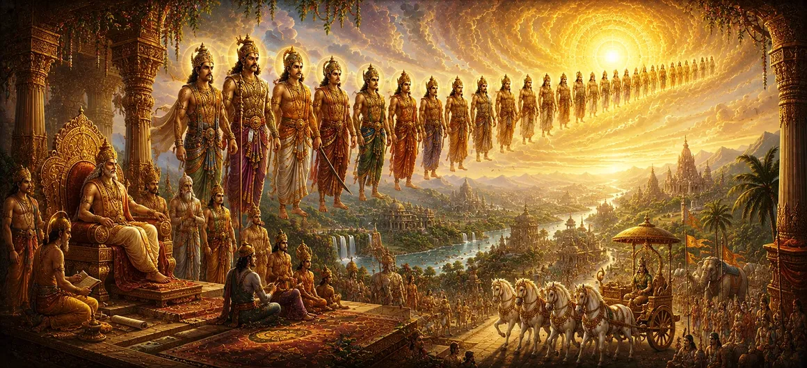

The Kings of the Solar Dynasty
Following the specific narrative from Satyavrata to King Sagara in Chapter 38, the thirty-ninth chapter of Uma Samhita broadens its horizon to survey the extensive and glorious panoply of monarchs belonging to the Solar Dynasty (Surya Vamsha).
This chapter details the successive generations of righteous rulers who maintained cosmic and moral order, upheld the traditions of truth, and brought immense prosperity to ancient Bharat.
Through these expansive genealogical records, the scripture illustrates how devotion to dharma and reverence for Lord Shiva form the foundation of lasting imperial greatness.
Chapter 39 Highlights
Dynastic Panorama
Surveys the grand lineage of monarchs extending across successive generations.
Pillars of Dharma
Highlights the rulers who anchored their governance strictly in moral principles.
Cultural Flourishing
Details the institutional and societal growth achieved under solar monarchs.
Sage Associations
Emphasizes the continuous collaboration between kings and enlightened seers.
Realm Protection
Illustrates how sovereign defense secured peace and prosperity for subjects.
Spiritual Legacy
Connects worldly rule with ultimate devotion to Lord Shiva's divine will.
Core Topics in This Chapter
- 01 Prologue to the Expansion of the Solar Dynasty →
- 02 Chronicle of Successive Solar Monarchs →
- 03 Virtues and Administrative Brilliance of Kings →
- 04 Upholding Dharma Across Generations →
- 05 Patronage of Vedic Rites and Sacred Institutions →
- 06 Maintaining Peace and Realm Stability →
- 07 Interactions and Guidance from Enlightened Seers →
- 08 Devotion to Lord Shiva and Divine Grace →
- 09 Reflections on Royal Duty and Transience →
- 10 Transition to the Glory of the Pitrs →
Prologue to the Expansion of the Solar Dynasty
Chapter 39 opens by establishing the grand scope of the Solar Dynasty, tracing its lineage directly from the solar energy and the primeval lawgiver Manu.
The scripture emphasizes that this dynasty was chosen to preserve cosmic harmony on earth, setting a standard of noble behavior and righteous leadership for all future ages.
The continuity of this lineage represents an unbroken chain of moral and spiritual custodianship.
Chronicle of Successive Solar Monarchs
The text methodically surveys the long succession of kings who followed in the footsteps of ancient progenitors, detailing their reigns and notable contributions.
Each monarch is noted for specific accomplishments in statecraft, infrastructure development, and the expansion of ethical governance across the realm.
Through these accounts, the text constructs a comprehensive historical tapestry of ancient civilization.
Virtues and Administrative Brilliance of Kings
The chapter highlights the exceptional personal virtues cultivated by these kings, including compassion, courage, truthfulness, and supreme self-discipline.
Their administrative brilliance ensured that justice was administered equitably, poverty was minimized, and citizens thrived in an environment of freedom and security.
Leadership was viewed not as a privilege of power, but as a heavy burden of sacred duty.
Upholding Dharma Across Generations
A central message of the chapter is the transmission of dharma from fathers to sons, ensuring that ethical standards did not degrade over time.
Even amidst political pressures and external conflicts, the monarchs steadfastly prioritized moral rectitude over diplomatic expediency.
This generational commitment to righteousness became the hallmark of the Solar royal house.
Patronage of Vedic Rites and Sacred Institutions
The kings of the Solar Dynasty were prolific patrons of sacrificial rites, temple construction, and centers of Vedic learning, ensuring that spiritual culture remained vibrant.
They generously supported sages and scholars, fostering an intellectual climate where philosophy and science advanced hand in hand.
This patronage sanctified the empire and reinforced the bond between the state and spiritual values.
Maintaining Peace and Realm Stability
Through prudent diplomacy and formidable military readiness, these monarchs kept their borders secure against hostile incursions and internal disturbances.
Their governance prioritized the welfare of the agrarian and merchant communities, ensuring steady economic growth and abundance throughout the empire.
Stability under their rule allowed arts, literature, and spiritual pursuits to flourish.
Interactions and Guidance from Enlightened Seers
No solar king ruled in isolation; instead, they maintained close counsel with realized sages who provided spiritual oversight and moral correction when necessary.
This partnership between political authority and divine wisdom prevented hubris and kept the royal administration humble and focused on public welfare.
Sage counsel was treated as the highest law of the land.
Devotion to Lord Shiva and Divine Grace
At the heart of the Solar Dynasty's success was an unwavering devotion to Lord Shiva. Kings regularly performed austerities and devotional rites to invoke divine protection.
They recognized that all temporal power is fleeting unless blessed by supreme grace, dedicating their victories and crowns to the feet of the Lord.
This profound spirituality shielded the dynasty through shifting historical epochs.
Reflections on Royal Duty and Transience
The narrative reflects on the transient nature of mortal life juxtaposed against eternal dharma. Kings came and went, but the merit of righteous deeds endured forever.
This wisdom kept monarchs detached from ego while deeply engaged in the service of their subjects.
Duty performed as an offering to the divine became the ultimate path to liberation.
Transition to the Glory of the Pitrs
As Chapter 39 concludes its survey of the Solar kings, it naturally bridges into the next theme. Having examined earthly sovereignty, the text prepares to explore the power and glory of the Pitrs (ancestral progenitors) in Chapter 40.
Readers are left with a profound understanding of how ancestral legacy and royal duty intertwine in Vedic cosmology.
Key Teachings of Chapter 39
Noble Lineage
The Solar Dynasty represents an unbroken chain of moral and spiritual custodians.
Duty Over Power
Kings viewed sovereignty as a heavy sacred responsibility rather than a privilege.
Sage Guidance
Close collaboration with enlightened seers kept political administration humble.
Cultural Patronage
Prolific support for Vedic rites and learning ensured vibrant societal growth.
Realm Stability
Prudent defense and economic care fostered peace and abundance for citizens.
Divine Devotion
Unwavering devotion to Lord Shiva ensured eternal legacy and protection.
Spiritual Reflection
Chapter 39 provides a magnificent sweeping panorama of the Solar Dynasty, reminding us that true greatness lies in the steady, selfless execution of duty. The kings surveyed in this chapter demonstrate that leadership is most effective when anchored in moral integrity, guided by spiritual wisdom, and dedicated in humble devotion to Lord Shiva. Their lives teach us that while worldly empires rise and fall, the merit generated by protecting dharma and serving others echoes eternally. By adopting this mindset in our own daily lives, treating our responsibilities as sacred offerings, we align ourselves with the cosmic order and build an enduring spiritual legacy.
Living the Message of Chapter 39
Apply the lessons of Chapter 39 by treating your daily responsibilities and professional duties as sacred trusts, executing them with honesty, diligence, and fairness.
Seek guidance from wise mentors and spiritual teachings when facing complex decisions, ensuring your actions remain aligned with dharma.
Dedicate your labor and its fruits in humble devotion to Lord Shiva, cultivating inner peace and moral strength.
Key Spiritual Concepts
The illustrious Solar Dynasty originating from the sun and Manu.
The sacred code of duty and righteousness governing a sovereign ruler.
Royal patronage and protection extended to Vedic rites and institutions.
Spiritual counsel and guidance provided by enlightened sages to kings.
The supreme administrative goal of ensuring universal welfare and prosperity.
Unwavering devotion to Lord Shiva as the source of all power and grace.
Chapter Summary
Uma Samhita Chapter 39 delivers an expansive survey of the kings of the Solar Dynasty, detailing their successive generations, personal virtues, and administrative brilliance. The text highlights how these monarchs prioritized dharma above political expediency, patronized Vedic institutions, maintained realm stability, and sought constant guidance from enlightened sages. Centered around deep devotion to Lord Shiva, their governance serves as a timeless model of righteous leadership. By exploring these grand royal annals, the chapter provides a profound transition into examining the power and glory of the Pitrs in Chapter 40.
Frequently Asked Questions
① What is the primary focus of Uma Samhita Chapter 39?
The primary focus is the sweeping survey of the wider line of monarchs and emperors belonging to the glorious Solar Dynasty.
② How does Chapter 39 follow Chapter 38?
While Chapter 38 focuses closely on the specific lineage from Satyavrata to King Sagara, Chapter 39 expands outward to survey the broader panoply of Solar Dynasty rulers.
③ What qualities are highlighted among these monarchs?
The text highlights their unwavering commitment to dharma, administrative brilliance, patronage of sages, and deep devotion to Lord Shiva.
④ Why is the Solar Dynasty significant in ancient scripture?
It represents a cornerstone of ancient governance, preserving moral order and cultural heritage across generations.
⑤ How does Chapter 39 connect to Chapter 40?
Chapter 39 provides a direct transition into Chapter 40, which shifts focus to explore the power and glory of the Pitrs.
⑥ What spiritual lesson do these royal records impart?
They teach that true temporal power is ephemeral unless aligned with eternal spiritual truths and divine grace.
“Righteous governance and devotion to Lord Shiva transform mortal kingdoms into vessels of eternal divine grace.”
Continue Through Uma Samhita
Chapter 39 surveys the expansive legacy of the Solar Dynasty kings. With this chapter concluded, proceed into Chapter 40 to explore the power and glory of the Pitrs.